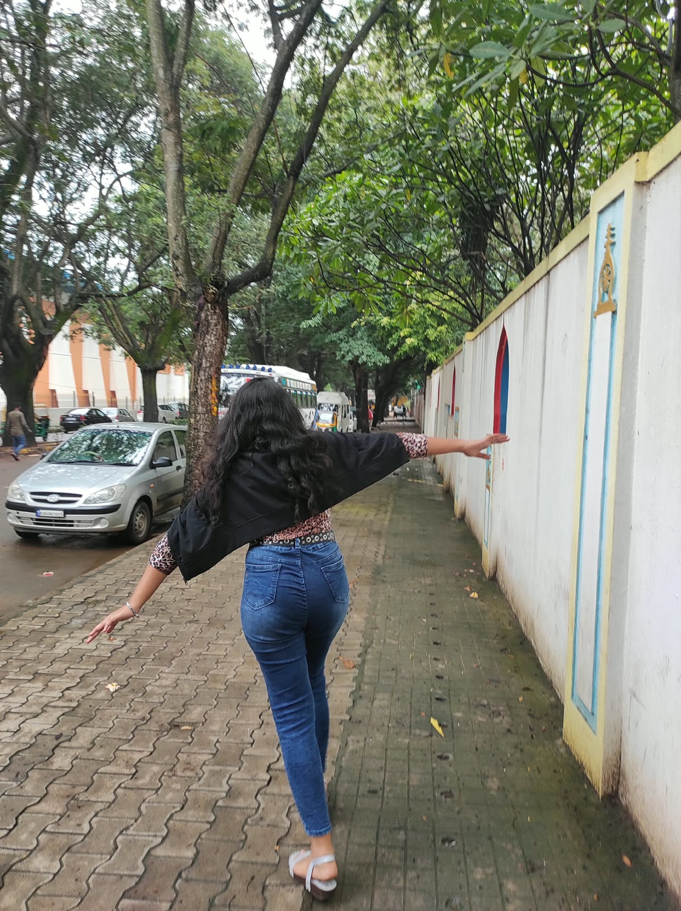
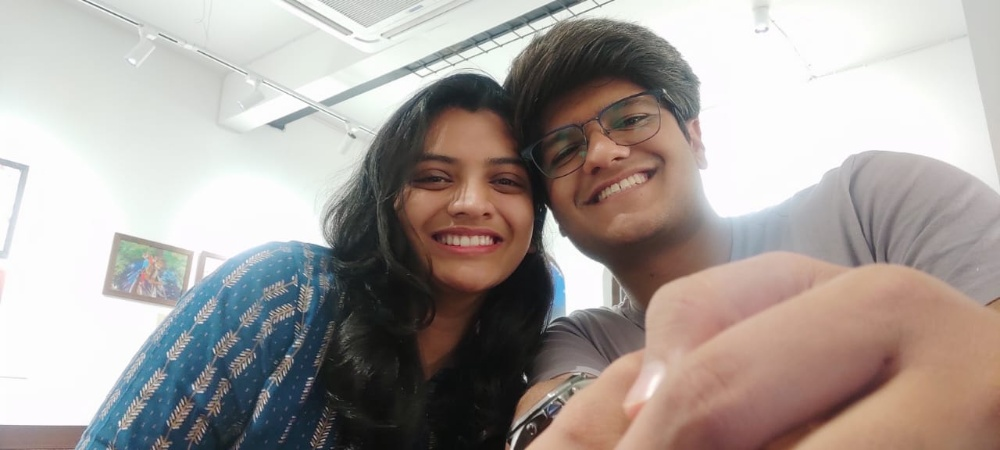
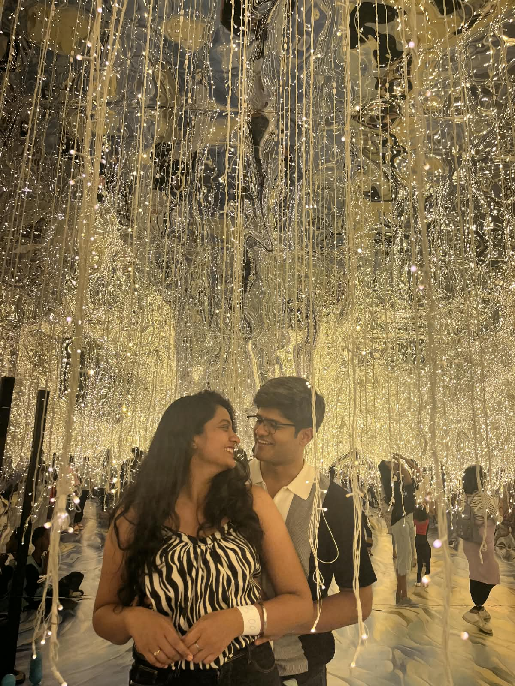
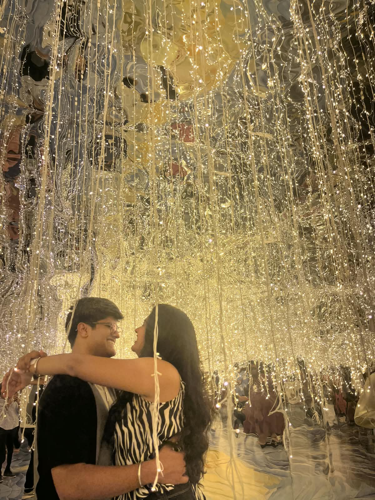

July 20, 2020 — Present
hello stranger ♡
No loud gestures. Just six years of choosing each other in the quiet moments.
You never cared for grand clichés or bouquets that fade in a week. You love what is real, unposed, and deeply felt. So here is a small, quiet corner made just for you—built from our own words, rhythms, and memories.
Time elapsed since “hello stranger ♡”
And counting every quiet second together.
Aug 15 – Nov 13, 2026 • A 90-Day Snapshot
The Anatomy of Us
Even when WhatsApp only lets us look back at the last three months, 90 days of our everyday life still adds up to something extraordinary.
messages exchanged
Literally Half & Half
Separated by just 38 messages across three whole months. Neither of us ever carries the conversation alone.
Signature Words
Tap any word below to see how many times we said it—and why it belongs to us.
Words Mukund Says Most
Words Tavu Says Most
Center of Our Word Cloud
“shona” — said 658 times by Mukund
More than seven times every single day—whether softening a busy afternoon, checking in after work, or reminding you that you’re always cared for.
12:00 PM & 12:00 AM
Our two sacred peaks: midday check-ins right at noon, and quiet late-night talks when the rest of the world goes to sleep.
Thursdays & Saturdays
Our most talkative days of the week—catching up before the weekend and sharing every unhurried Saturday moment together.
4,751 Soft Eyes
Our top shared language when words aren’t enough—led overwhelmingly by 🥺 (3,112× from you, 1,639× from Tavu).
“I only take candid pictures… live the moment”
Unposed & Real
Never for the camera, never for show—just the real seconds in between.
Frame 01

Quiet transit rides, resting on your shoulder
Peaceful even in the middle of a crowded train
Frame 02

Two-wheeler rides & wind in our hair
Nowhere in particular, smiling the whole way
Frame 03

Quiet mornings, mirror selfies
The simplest, happiest version of us
Frame 04

Evenings under the warm lights
Quiet dinners and easy walks after dusk
Frame 05

Unfiltered laughs, leaning in
The smile that makes every room lighter
Frame 06

Dressed up, still just us
Our very first picture at Le Vantage
Frame 07

A thousand tiny lights
And I still only looked at you
Frame 08

Held close, glowing
The whole room faded out for a moment
Frame 09

Wandering Bangalore, arms wide
Free, balanced, and completely yourself
Frame 10

Jhumkas & festive evenings
Captured without ever asking you to pose
Tap play
Moving Moments
Some things are better when you can hear them.
A little moment, in motion
Press play and stay a while
Another one I keep replaying
Real, unposed, ours
Echoes From Our Chat
The Little Things Archive
Tap each linen card to open a small truth from our everyday messages.
A Quiet Letter For You
Dearest Tavu,
It still makes me smile that all of this began with three simple words and a little hollow heart—“hello stranger ♡”—back on July 20, 2020. We weren’t strangers for very long.
Over six years, across different cities, late-night calls, Purdue chapters, busy Sundays, and thousands of small check-ins, you have remained the softest, most genuine part of my life. I know you don’t care for flashy things or flowers that wilt—you care about sincerity, presence, and the quiet comfort of being truly understood.
Thank you for being my safe place, my favorite candid laugh, and my best friend. Here is to every ordinary day and every unposed moment still waiting for us.
Always yours,
Mukund ♡
Just like July 20, 2020.